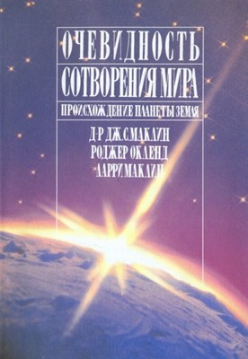
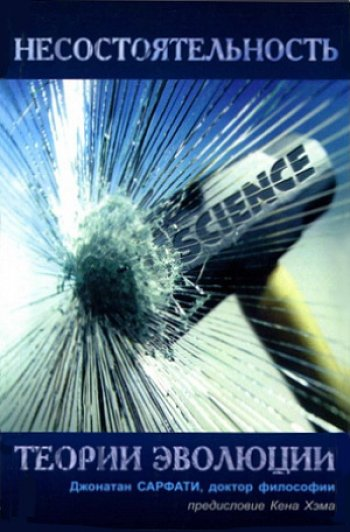

Найновіші книги

 детальніше
детальніше
Очевидність створення світу
27.02 / 2005 / Креаціонізм
Д-р Глен Маклін, Роджер Окленд, Ларрі Маклін
Христианская миссия «Триада»; Москва
DOCX - 3.5Mb

детальніше
Неспроможність теорії еволюції
13.07 / 2001 / Креаціонізм
Сарфати Джонатан
Сімферополь: Християнський науково-апологетичний центр
PDF - 3.5Mb